Index of Topics
- - A -
- Accessing Help
- C -
- Changing Colors
Changing the Font
Closing a File
Configuring the Editor
Controlling Magic Characters
- E -
- The Editor Toolbar
- F -
- File Matching Regular Expressions
File Specific Options
File Specific Options : Language
File Specific Options : Miscellaneous
File Specific Options : Source
File Specific Options : Tabs
File Specific Options : Tags
- G -
- General Options
General Options : Features
General Options : Filenames/Paths
General Options : Miscellaneous
General Options : Searching
General Options : VI Emulation
General Options : Word Definitions
- O -
- The Open Watcom Editor
Opening a New File
Opening an Existing File
Opening and Closing Files
- R -
- Regular Expression BNF
Regular Expressions
Replacement Strings
Replacing Text
- S -
- Saving Files
Saving the Configuration
Screen/Window Options
Screen/Window Options : Editing
Screen/Window Options : Miscellaneous
Searching Text
Setting Search and Replace Options
Setting Search Options
Starting and Quitting the Editor
Startup Options
Status Bar Contents
Status Bar Contents : Alignment
Status Bar Contents : Commands
Status Bar Contents : Items
- U -
- Using Drag and Drop Palettes
Using Fgrep Capabilities
Using Menus
Using the Right Mouse Button
- W -
- When Less Than One Line is Selected
When More Than One Line is Selected
The Open Watcom Editor
The Open Watcom Editor is a text editor designed for the Windows environment. It contains a toolbar and menu items
which you can use to make your choices. It can use proportional fonts. It also contains drag and drop toolbars
or palettes that allow you to make choices and then simply drag them to the elements to which you want to apply them.
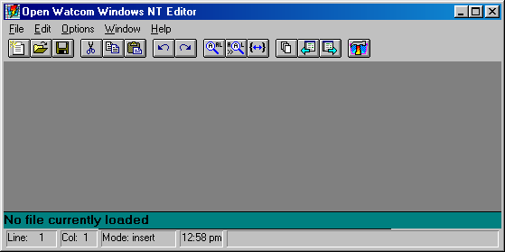
Figure 1. The Open Watcom Editor
Startup Options
When the Editor is started under Windows, a set of default options are used. To find out what options are available,
modify the "Command Line:" of Program Item Properties dialog by adding "-?" after the program
name and then start the Editor. Alternatively, you can use the Program Manager Run dialogue to start
the Editor, specifying "-?" after the program name.
The Editor follows standard Windows conventions for its menus. A brief description of each menu item appears in
the status bar on the bottom right of the screen when you select it.
The File and Edit menus contain items standard to most Windows applications.
Using Drag and Drop Palettes
The Editor contains two drag and drop palettes. You can affect elements of the Editor by dragging and dropping colors
or fonts onto them.
The Editor has two context-sensitive menus- one for the current cursor location if less than one line is selected, and
one if several lines are selected. You can access both of them by clicking on the right mouse button.
When Less Than One Line is Selected
When the cursor is in a word or a word is selected you can press the right mouse button to select the following options:
- Windows Help
- Choose Windows Help to find information about the currently selected text.
CLib Help
- Choose CLib Help to find information from the C Library Reference manual about the currently selected text.
Open
- Choose Open to open a new file. The name of the new file is the selected text.
Cut
- Choose Cut to delete the selected text and place it on the Windows clipboard.
Copy
- Choose Copy to copy the selected text to the Windows clipboard and leave the original.
Find
- Choose Find to look for the first occurrence of the selected text. The Find dialog appears.
Fgrep
- Choose Fgrep to find all files in the current directory which match the grep default mask and contain the selected text.
Tag
- Choose Tag to look for a tag whose name is the selected text.
When More Than One Line is Selected
When several lines are selected, press the right mouse button to select the following options:
- Cut
- Choose Cut to delete the selected lines and place them on the Windows clipboard.
Copy
- Choose Copy to copy the selected lines to the Windows clipboard and leave the original lines.
>>Shift Right
- Choose Shift Right to move the selected lines right by a number of spaces equal to the shift width setting.
<<Shift Left
- Choose Shift Left to move the selected lines left by a number of spaces equal to the shift width setting.
Starting and Quitting the Editor
You can start the Editor from within the Open Watcom IDE or through Windows.
To open the Editor from within the Open Watcom IDE, double click on a source module. To start the Editor from
Windows, double click on the Open Watcom Editor icon.
To leave the Editor, choose Exit from the File menu.
Opening and Closing Files
There are three items that you can select from the File menu to open and close files:
- New
- Open a new file.
Open
- Open an existing file.
Close
- Close an open file.
Opening a New File
- (1)
- Start the Editor.
(2)
- Choose New from the File menu.
An empty text window appears.
Opening an Existing File
- (1)
- Start the Editor.
(2)
- Choose Open from the File menu.
The standard Windows Open dialog appears.
(3)
- Choose the file and click on OK.
You may have to change the current drive and directory to find the file. The file then opens.
Closing a File
To close a file, choose Close from the File menu.
You can also close any open file by choosing File List from the File menu. You can then select the file from
the list of open files and click on the Close button.
Saving Files
There are three items that you can select from the File menu to save files:
- Save
- Save the changes made to the current file.
Save As...
- Save the current file under a different name. This is the standard Windows Save As... dialog. When you save
the current file with a new name, only the new file remains open.
Save All
- Save the changes made to all open files.
In the Open Watcom Editor window, the toolbar appears below the menu bar when the Toggle Toolbar in the Options menu is
selected (default). A check mark beside the menu option indicates that it is enabled. To disable this feature,
choose the option again from the Options menu and the toolbar disappears.
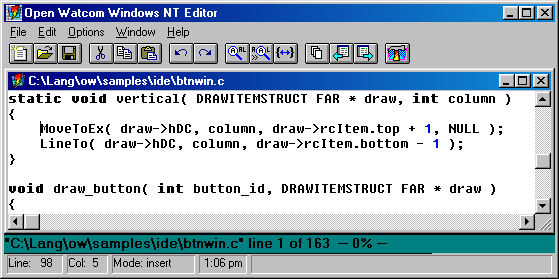
Figure 2. You can access up to 15 Editor functions from the toolbar.
The following explains the function each icon performs, as well as the equivalent function on the menu bar.
- New
- Open a new file. This is equivalent to New in the File menu.
Open
- Open a new or existing file. This is equivalent to Open in the File menu.
Save
- Save the current file. This is equivalent to Save in the File menu.
Cut
- Delete the selected text to the clipboard. This is equivalent to Cut in the Edit menu.
Copy
- Copy the selected text to the clipboard. This is equivalent to Copy in the Edit menu.
Paste
- Insert the clipboard contents at the current cursor position. This is equivalent to Paste in the
Edit menu.
Undo
- Undo the last change to the current file. This is equivalent to Undo in the Edit menu.
Redo
- Undo the last undo. This is equivalent to Redo in the Edit menu.
Find
- Search for the specified text. This is equivalent to Find in the Edit menu.
Find Next
- Repeat the last search. This is equivalent to Find Next in the Edit menu.
Match
- 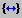 Find matching brackets from the current cursor position.
File List
- Display a list of all files being edited. This is equivalent to File List in the File menu.
Previous File
- Switch to the previous file.
Next File
- Switch to the next file.
IDE
- Reactivate the IDE. This icon is present on the toolbar if the Editor was invoked from the IDE.
Searching Text
The Editor has a powerful search function that you can use to locate strings of text, including regular expressions.
For more information on regular expressions, refer to the chapter entitled Regular Expressions.
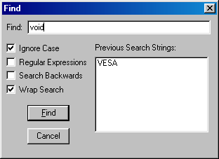
Figure 3. The Find Dialog
To search for a string of text:
- (1)
- Choose Find from the Edit menu.
The cursor flashes in the Find box.
(2)
- Enter the search string in the Find box.
(3)
- Set the find options.
(4)
- Click on the Find button.
When the search is successful, you are repositioned to the line containing the string.
You can use Find Next and Find Previous in the Edit menu to repeat a search for the same string.
Setting Search Options
The Find dialog contains a number of default options that you can set in the General... dialog of the Options
menu. You can change the default settings for the current session in the Find dialog.
You can set the following options:
- Ignore Case
- You can have the search match the case exactly or match the characters only and ignore the case.
Regular Expressions
- You can use regular expressions in your "Find" text if you check this box.
Search Backwards
- By default, a search is conducted through the lines that follow the current cursor position. Select this option if you
wish to search backwards from the current cursor position.
Wrap Search
- By default, the search ends when it reaches the end of the file. However, if your search begins in the middle of the
file and you want to search through the whole file, you can set the search to go to the beginning of the file and continue
until it reaches the search starting point.
Replacing Text
The Editor has a powerful search and replace function that you can use to replace strings of text, including regular expressions.
For more information on regular expressions, refer to the chapter entitled Regular Expressions.
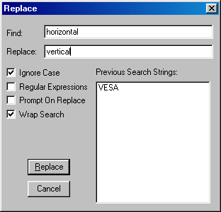
Figure 4. The Replace Dialog
To search and replace a string of text:
- (1)
- Choose Replace from the Edit menu.
The cursor flashes in the Find box.
(2)
- Enter the search string in the Find box.
(3)
- Press Tab.
The cursor moves to the Replace box.
(4)
- Enter the replace string.
(5)
- Set the replace options.
(6)
- Click on the Replace button.
When the replace is complete, you return to the file.
If the Prompt on Replace option is turned on, you must confirm each replacement. If it is off, all occurrences
of the string are replaced automatically.
Setting Search and Replace Options
The Replace dialog contains a number of default options that you can set in the General... dialog of the
Options menu. You can change the default settings for the current session in the Replace dialog.
You can set the following options:
- Ignore Case
- You can have the search match the case exactly or match the characters only and ignore the case.
Regular Expressions
- You can use regular expressions in your "Find" and "Replace" text if you check this box.
Prompt on Replace
- By default, all found strings are replaced with the replace string. Turn this option on to be prompted for each replacement.
Wrap Search
- By default, the search ends when it reaches the end of the file. However, if your search begins in the middle of the
file and you want to search through the whole file, you can set the search to go to the beginning of the file and continue
until it reaches the search starting point.
Changing the Font
You can define the font for the message window, status window, and all syntax elements in the edit buffers.
Within the edit buffer, all fonts must be the same typeface and point size. Other areas, such as message or
status windows, can have any typeface or point size.
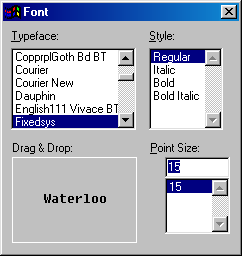
Figure 5. The Font Settings Dialog
You can use the drag and drop feature with the Font dialog. To use drag and drop:
- (1)
- Choose Fonts from the Options menu.
(2)
- Choose the typeface, style, and point size that you want. A sample of the text appears in the Drag and Drop
box.
(3)
- Click in the drag and drop box and drag the cursor to the element to which you want to apply the font characteristics.
All elements change to the new font style. All buffers are affected when you change one.
Changing Colors
Use the Colors drag and drop palette to set the color of your windows and code. You can define the color of the
toolbar, message window, status window, and all syntax elements in the edit buffers.
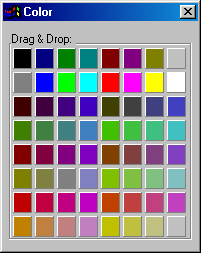
Figure 6. The Colors Palette
To change the color of an element in your file:
- (1)
- Choose Colors from the Options menu.
(2)
- Click on the color you want and drag it to the screen or syntax element to which you want to apply the color The element
is changed to the new color
Use the left mouse button to color foreground elements and the right mouse button to color background elements.
Press Control and the right mouse button to affect the color of all backgrounds. Press Control and the left
mouse button to affect all foregrounds.
Accessing Help
A description of the currently selected option appears in the Status bar on the bottom right of the screen.
You can also choose items from the Help menu to see more information about an item.
Using Fgrep Capabilities
Fgrep stands for File Global Regular Expression and Print. It is a powerful tool that allows you to search
through a number of files to find all occurrences of a regular expression.
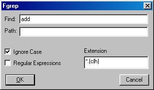
Figure 7. The Fgrep Dialog permits you to search files containing a certain string.
To perform an fgrep:
- (1)
- Choose Fgrep from the Edit menu.
A dialog appears.
(2)
- Enter the text you want to search for.
(3)
- Select any options you want to use during the search.
(4)
- Click on OK.
You can set the default "fgrep" file extensions in the File Specific... dialog of the Options menu.
For a description of the options, refer to the section entitled File Specific Options.
The Files Containing dialog shows the name of all files that contain the string as well as the beginning of
the line that contains the string.
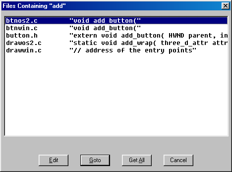
Figure 8. The Files Containing Dialog shows you all files with occurrences of a string.
From the Fgrep dialog you can:
- Edit
- Select an individual occurrence and open that file. The file opens in the background, but the Fgrep dialog remains.
Goto
- Open the selected file for editing at the first occurrence of the search pattern in the Fgrep dialog.
Get All
- Open all found files. The files open, with the last one in the list the currently open file.
Cancel
- Leave the Fgrep dialog.
Configuring the Editor
The Options menu items contain all of the control and formatting options available with the Editor. You can configure
the Editor as you like. Most options apply to the Editor, but some apply only to the current file. A description
of each of the dialogs follows.
Status Bar Contents
Use the Status Bar Contents dialog to set the contents of the status bar.
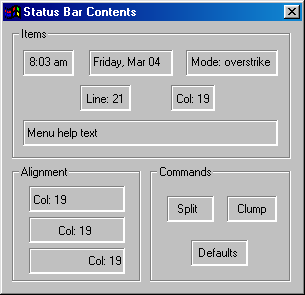
Figure 9. The Status Bar Contents dialog
The options in the Status Bar Contents dialog are divided into three areas:
Status Bar Contents : Items
The items in this area are:
- Time of day
- Current date
- Current insertion mode
- Line number
- Column number
- Menu help text
Any of these items may be dragged to one of the windows in the status bar. When an item is dragged to one of these
windows, it replaces the contents of that window. For example, you can drag the "Date" item into the status
bar window displaying the current line number and the current date will be displayed in its place.
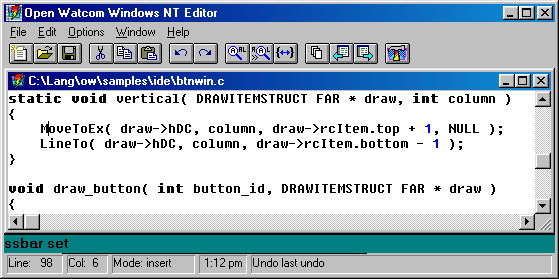
Figure 10. The Status Bar consists of several small windows
Status Bar Contents : Alignment
The items in this area are:
- Left aligned
- Center aligned
- Right aligned
When any of these items are dragged to a window in the status bar, it affects the alignment of the item currently displayed
in the window. For example, you can drag the "Center aligned" item (the middle one) into the status bar window
displaying the current time and the current time will be centered in the window.
Status Bar Contents : Commands
The items in this area are:
When the "split" item is dragged to a window in the status bar, the window is split into two evenly-sized smaller
windows. You can adjust the size of a window by dragging the bar between two windows to the left or right.
When the "clump" item is dragged to a window in the status bar, the window is removed from the status bar.
When the "defaults" item is dragged to any place on the status bar, the default settings for the status
bar are re-established.
General Options
Use the General Options dialog to set the general features of the Editor including save, search, and word definitions.
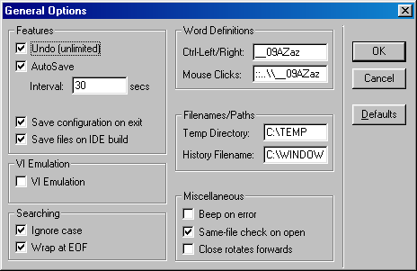
Figure 11. The General Options Dialog
The options in the General Options dialog are divided into six categories:
- Features
- VI Emulation
- Searching
- Word Definitions
- Filenames/Paths
- Miscellaneous
General Options : Features
The Features section allow you to set options such as undo, autosave, automatic save of configuration, and save of files
upon IDE build.
- Undo
- Turn this option on to allow an unlimited number of undo's.
AutoSave
- Enable or disable the autosave option. This option allows you to determine how often a copy of your file is saved to
the Temp Directory. Enter the time in seconds in the Interval box.
Save configuration on exit
- Turn this option on if you want the Editor to save the current configuration when you leave the Editor.
Save files on IDE build
- Turn this option on if you want the Editor to be notified whenever you start an IDE make. It will cause the Editor to
prompt you for each file that was modified and has not been saved to disk since the last make (build).
General Options : VI Emulation
Beneath the Editor's mild-mannered exterior lurks the full power of the Open Watcom VI editor, complete with scripting,
commands and bookmarks. Turning on VI emulation causes the Editor to emulate the behaviour of the Open Watcom VI editor.
General Options : Searching
Use the Searching options dialog to set the default search and replace options.
- Ignore case
- Turn this option on if you do not want the Search function to match case when searching for a string.
Wrap at EOF
- Turn this option on if you want the search to continue at the beginning of the file when it reaches the end of the file.
It will then continue to the starting point of the search.
General Options : Word Definitions
Use the Word Definition options to define pairs or ranges that are considered valid parts of a word. The default
for Ctrl-Left/Right is __09AZaz which defines the underscore character, all numbers, and all upper and lower case letters.
The default for mouse clicks is ::..\__09AZaz which defines the colon, period, backslash, and underscore characters
as well as all numbers, and upper and lower case letters.
General Options : Filenames/Paths
Use the Filenames/Paths option to define the default directory to which the Editor writes temporary files and the Editor's
history file.
The Temp Directory is set, by default, from the TMPDIR environment variable if it is defined.
Autosave files are written to the Temp Directory.
General Options : Miscellaneous
Use the miscellaneous options to set:
- Beep on error
- Turn this option on if you want an audible beep to sound when the Editor encounters an error.
Same-file check on open
- Use this option to have the Editor check that a file you are opening is not already open. You can open multiple copies
of the same file, however, the Editor keeps only the last version of the file saved. To open multiple copies of the
same file, you must specify different paths.
Close rotates forward
- Turn this option on if you want the Editor to rotate forward through the open files when you close the current file.
File Specific Options
The File Specific Options dialog contains settings that control your file including tabs, tags, line numbers, and default
file extensions.
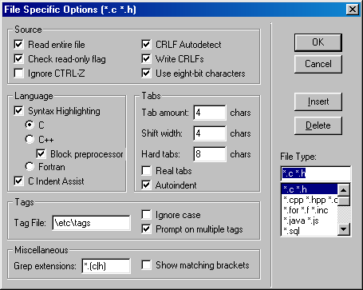
Figure 12. The File Specific Options Dialog
The settings are divided into five categories:
- Source
- Language
- Tabs
- Tags
- Miscellaneous
File Specific Options : Source
The source section contains a number of options that allow you to control your source code.
- Read entire file
- Turn this on if you want the Editor to read the entire file when it opens a new file. Turn this option off if you want
the Editor to load small pieces of the file as needed.
Check read-only flag
- Turn this option on if you want files that you open to be read only. You cannot change or write the files under the
same name.
Ignore Ctrl-Z
- Turn this option on if you want the Editor to ignore Ctrl-Z as the end of file marker.
CRLF Autodetect
- Turn this option on if you want the Editor to detect if the file it is opening has CR and LF at the end of each line.
If it does, it will write the file in the same format.
Write CRLFs
- Turn this option on if you want both a CR and an LF at the end of each line. This is the standard format for DOS files.
Use eight-bit characters
- Turn this option on if you want to edit the IBM extended characters, such as line drawing. If this option is off, you
can edit normal text only.
File Specific Options : Language
The Editor allows you to highlight different parts of the syntax for the language you are using. This allows you
to easily find the parts of code you are looking for because they are different colors and/or fonts. The Editor highlights
lexical elements for C, C++, Fortran, Java and JavaScript, and HTML code (among others).
The Language section also allows you to turn on C Indent Assist. The Editor then uses common C formatting conventions
such as smart indenting and outdenting with braces.
File Specific Options : Tabs
Use the tab options to define what the tab key does and the tab amounts.
- Tab amount
- Set the tab width if real tabs has not been set. Tab amount specifies the number of spaces indented by tab key.
Shiftwidth
- Set the shiftwidth value. The default is four characters.
Real Tabs
- Turn Real Tabs on to use the ASCII tab character instead of spaces when you press TAB. Turn this option off to have
tabs replaced with the appropriate number of spaces.
Hard Tabs
- Set the width of hard tabs. The default is eight characters.
Autoindent
- Turn on the Autoindent feature. Each new line then indents to the same level as the previous line.
Use the Tags options to control the file that contains the list of code items in your source files.
- Tag File
- Enter the name of the tag file that contains your ctags.
Ignore Case
- Turn this option on, if you want the tag file to ignore the case of tags.
Prompt on multiple tags
- Turn this option on, if you want to be prompted when you tag a function that has multiple entries in the tags file.
Tag files are created by the CTAGS utility, which is described in the Open Watcom VI editor documentation.
File Specific Options : Miscellaneous
Use the Miscellaneous options to define the default file extensions for Editor files and to show matching brackets.
- Grep extensions
- Define the default file extension to grep when you choose fgrep from the right mouse button pop-up menu.
Show matching brackets
- Turn this option on for the cursor to flash to the opening brace when you type the closing brace.
Screen/Window Options
Use the Screen and Window Options dialog to define how you move around your screen and what appears on it.
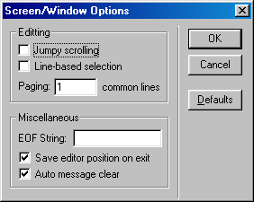
Figure 13. The Screen/Window Options Dialog
Screen/Window Options : Editing
The Editing section allows you to to define how the text moves around the screen.
- Jumpy Scrolling
- Turn this option on to scroll two lines at a time instead of one.
Line-based Selection
- Turn this option on to select a whole line no matter where you are in the line when you select more than one line. You
can still however, select part of one line. If this option is off, you can select any part of the first and last line
in the block of lines you select.
Paging
- Enter the number of lines that you want to overlap when you use the Page Up and Page Down keys.
Screen/Window Options : Miscellaneous
The Miscellaneous options allow you to set the following:
- Enter your own string to appear at the end of the file. For example, you may want the word END to appear
at the end of the file.
- Save the Editor's screen position when you exit the file.
- Clear messages after the next key is pressed instead of having them remain until the next error message occurs.
Saving the Configuration
The Save Configuration menu item will save your current configuration regardless of the status of the "Save configuration
on exit" setting. The configuration information is saved to a weditor.ini file either in the user's home
directory (on multi-user systems) or in the Windows system directory.
Regular Expressions
Regular expressions are a powerful method of matching strings in your text. Commands that use regular expressions
are:
- forward slash (/) command mode key (search forwards)
- question mark (?) command mode key (search backwards)
- forward slash (/) command line address (search forwards)
- question mark (?) command line address (search backwards)
- substitute command line command
- global command line command
- egrep command line command
- match command line command
Different characters in a regular expression match different things. A list of all special (or "magical")
characters is:
- A backslash (\) followed by a single character other than new line matches that character
- The caret (^) matches the beginning of a line
- The dollar sign ($) matches the end of a line
- The dot (.) matches any character
- A single character that does not have any other special meaning matches that character
- A string enclosed in brackets [] matches any single character from the string. Ranges of ASCII character
codes may be abbreviated as in a "a-z0-9". A ] may occur only as the first character of the string.
You must place a literal - where it cannot be mistaken as a range indicator. If a caret (^) occurs as the first character
inside the brackets, then any characters NOT in the string are matched
- A regular expression followed by an asterisk (*) matches a sequence of 0 or more matches of the regular expression
- A regular expression followed by a plus sign (+) matches one or more matches of the regular expression
- A regular expression followed by a question mark (?) matches zero or one matches of the regular expression
- Two regular expressions concatenated match a match of the first followed by a match of the second
- Two regular expressions separated by an or bar (|) match either a match for the first or a match for the second
- A regular expression enclosed in parentheses matches a match for the regular expression
- The order of precedence of operators at the same parenthesis level is the following: {}, then *+?, then concatenation,
then /.
- All regular expressions following an at sign (@) are treated as case sensitive
- All regular expressions following a tilde (~) are to be treated as case insensitive
- If an exclamation point (!) occurs as the first character in a regular expression, it causes the ignoring of the
magic setting; that is, all magic characters are treated as magical. An exclamation point (!) is treated as
a regular character if it occurs anywhere but at the very start of the regular expression.
If a regular expression could match two different parts of the line, it will match the earliest one. If both begin
in the same place, but match different lengths, or match the same length in different ways, then the rules are more complicated.
In general, the possibilities in a list of branches are considered from left to right, the possibilities for *, +,
and ? are considered longest first, nested constructs are considered from the outermost in, and concatenated constructs
are considered leftmost first. The match that is chosen is the one that uses the earliest possibility in the first
choice that has to be made. If there is more than one choice, the next will be made in the same manner (earliest possibility)
subject to the decision on the first choice. An so forth.
For example, (ab|a)b*c could batch the string abc in one of two ways. The first choice is between
ab and a. Since ab is earlier in the expression and does lead to a successful overall match, it is chosen.
Since the b is already spoken for, the b* must match its last possibility since it must respect the earlier
choice.
If there are no |'s present and only one *m, +, or ?, the net effect is that the longest possible match will be chosen.
So ab presented with xabbbby, will match abbbbb. Note that is ab* is tried against xabyabbbz,
it will match ab just after x, due to the begins earliest rule.
Regular Expression BNF
A pseudo-BNF for regular expressions is:
- reg-exp
- {branch}|{branch}|...
branch
- {piece}{piece}...
piece
- {atom{* or + or ?}}{atom {* or + or ?}}... *-match 0 or more of the atom; +-match 1 or more of the atom; ?-match a match
of the atom, or the null string.
atom
- (reg-exp) or range or @ or ^ or $ or \char or char.
range
- [{^} char and/or charlo-charhi]. ^ causes negation of range.
.
- Match any character.
^
- Match start of line.
$
- Match end of line.
@
- Search with case sensitivity.
~
- Search without case sensitivity.
!
- If it occurs as the first character in a regular expression, the magic setting is ignored; that is, all magic characters are
treated as magical. ! is treated as a regular character if it occurs anywhere but at the very start of the regular
expression.
char
- Any character.
\char
- Forces \char to be accepted as char (no special meaning) except \t matches a tab character if realtabs is set.
File Matching Regular Expressions
When specifying a file name in the Editor, it is possible to use a file matching regular expression. This expression
is similar to a regular expression, but has a couple of differences:
- A dot (.) specifies an actual dot in the file name.
- An asterisk (*) is the same as .* (matches 0 or more characters).
- A question mark (?) is the same as a regular expression dot (.); that is, a question mark matches exactly one character.
- A caret (^) has no meaning.
- A dollar sign ($) has no meaning.
- The backslash (\) has no meaning. It is used to separate directories.
Suppose we have the following list of files:
a.c
abc.c
abc
bcd.c
bad
xyz.c
The following examples show how the files from the above list are matched by various file name regular expressions.
- a*.c
- All files that start with a and end in .c. Therefore, it matches a.c and abc.c
(a|b)*.c
- All files that start with an a or a b and end in .c. Therefore, it matches a.c, abc.c, and bcd.c
*d.c
- All files that end in d.c. Therefore, it matches bcd.c
*
- All files.
*.*
- All files that have a dot in them. Therefore, it matches a.c, abc.c, bcd.c, xyz.c
Replacement Strings
There are special characters to use in the replacement string if you use regular expressions in the search and replace
function.
- &
- Replace each instance of & in the replacement string with the entire string of matched characters
\\
- Enter a \ in the replacement string
\n
- Replace with a new line
\t
- Replace with a tab (if realtabs is set)
\<n>
- Replace each instance of < n >, where < n > is a digit from 0 to 9, with the n'th sub-expression
in the regular expression
\u
- Change the next item in the replacement string to upper case
\l
- Change the next item in the replacement string to lower case
\U
- Change all items following \U in the replacement string with upper case, until \e, or \E is encountered
\L
- Change all items following \L in the replacement string with lower case, until \e, or \E is encountered
\e, \E
- End the change to upper (\U) or lower case (\L)
\|<n>
- Substitute spaces up to column <n>, so that the item that follows occurs at column <n>
\#
- Substitute the current line number on which the match occurred.
Controlling Magic Characters
By default, all special characters in a regular expression are magical; that is, if a special character is used, it has
a special meaning. To use a special character, like (, you must escape it (\().
However, it is possible to change this using the magic setting in the General Options dialog.
If magic is turned on, then all special characters are magical. If magic is turned off,
then any special characters listed in Magic String Edit Control in the General Options dialog lose their special meaning
and are treated as regular characters. If magic is turned off and you want to use the characters in their
magical way, you must escape them with a \.